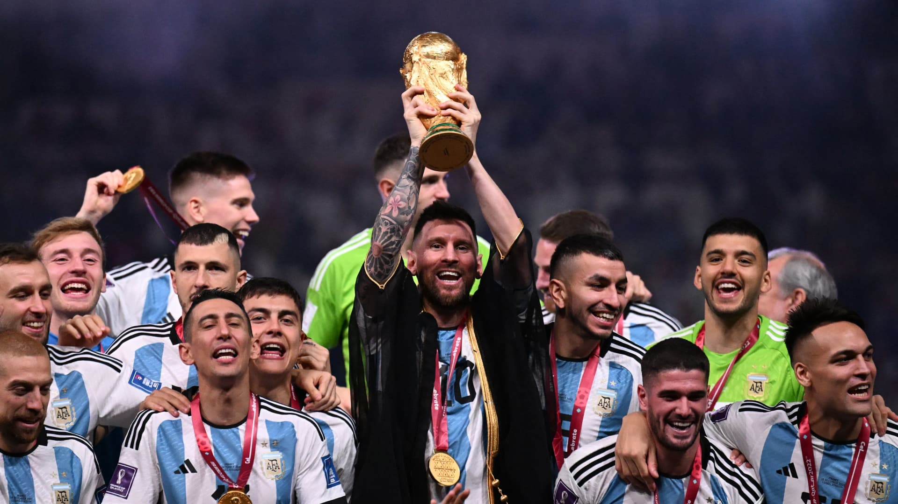
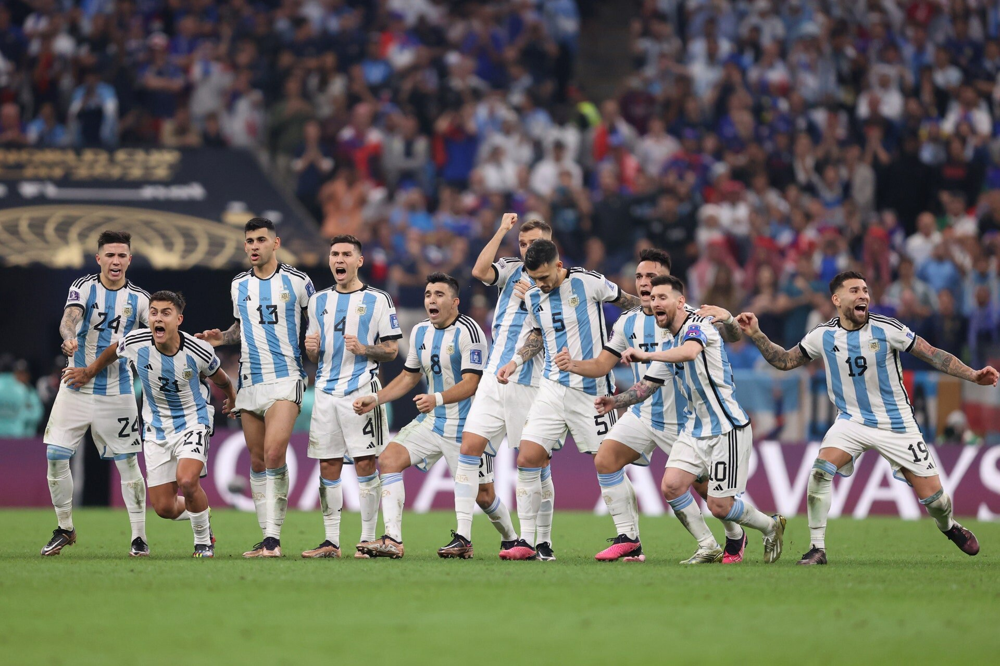

ARGENTINA IS THE WORLD CHAMPION
Argentina has won the 2022 World Cup in Lusail, Qatar, defeating France with a 3-3 (4-2 penalty) final score after a nail-bitting match that concluded in a penalty shootout.
The first half of the match saw Argentina claim a 2-0 lead thanks to goals from Angel Di Maria and the legendary Lionel Messi, who played his final World Cup today. With a penalty kick 23 minutes in, Messi became the first man in FIFA World Cup history to score in all five rounds at a single tournament.
Progressing into the second half, Argentina looked to secure their lead (and avoid exhausting their players) by slowing down their play—but France soon rallied to a tie with two consecutive goals from Kylian Mbappé, the team’s 23-year-old star player. (Mbappé impressively earned both points within two minutes of each other, causing French fans—among them an effusive Emmanuel Macron—to go wild.)
During extra time, Messi scored for Argentina yet again, bringing the score to 3-2, before Mbappé pulled off a hat trick, forcing a tie-breaking shootout at 3-3. While Mbappé and Randal Kolo Muani went on to convert their penalties for France, misses from Kingsley Coman and Aurelien Tchouameni cleared the way for an Argentine win, after Messi, Paulo Dybala, Leandro Paredes, and finally 25-year-old Gonzalo Montiel all found the back of the net, clinching the match.
Both teams today were up for their third World Cup; France has worn the Cup twice, in 1998 and 2018, while Argentina won in 1978 and 1986.
Today’s nerve-racking match follows up yesterday’s equally thrilling third place play-off, in which Croatia defeated Morocco 2-1. It marked the second time Croatia has won third place in the World Cup, having previously finished third back in 1998. Morocco’s fourth-place finish, meanwhile, was still a historic moment, making them the first African nation to reach the World Cup semifinals.